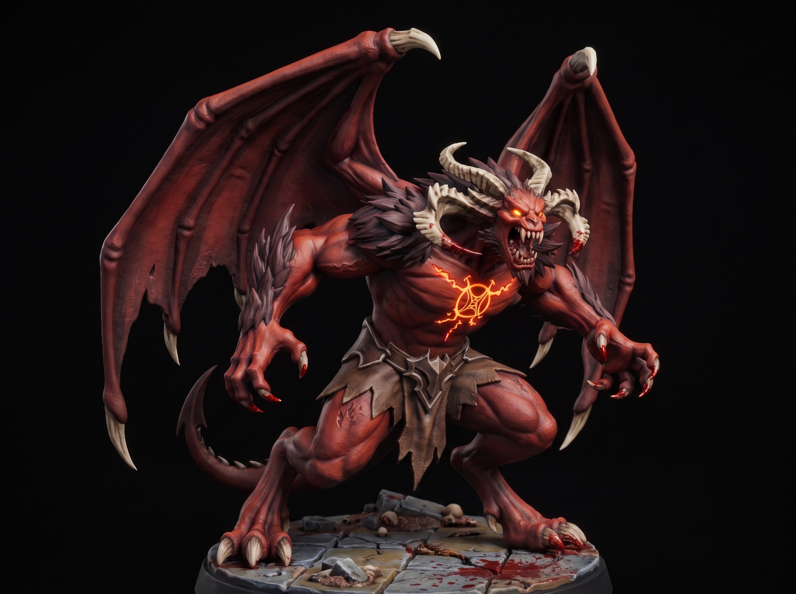

Undead Grave Knight Heavy Infantry
August 05, 2026

Blacksmiths forged the first Grave Knights from meteoric iron. They quenched the hot steel in sea salt and old blood. Their oaths outlasted their flesh. Now they march without masters across forgotten battlefields. They guard empty thrones and shattered gates.
These warriors never speak or run. They move in silence until steel meets steel. A single broadsword swing shatters heavy wooden shields. They feel no pain, fear, or fatigue. They simply advance until nothing remains in front of them.
Scavengers raid their crypts for the rare metal. Few live to sell the scrap. Target the joints if you encounter one. A Grave Knight never drops its blade while the plate holds together.
Get free miniatures:
- Fantasy: https://cults3d.com/@BattleFoundry
- Scifi: https://cults3d.com/@BATTLEFOUNDRYSCIFI
- Grimdark: https://cults3d.com/@DREADWORKS
- Resin Statue: https://cults3d.com/@BlacksiteSyndicate